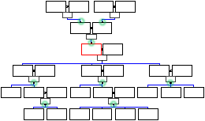

Mirando la información contenida en un fichero Gedcom con esta vista las relaciones de familia son claves. Para construir un árbol visual GenJ empieza con la raíz de un árbol, un individuo o familia y colecciona todos los antepasados y descencientes de esa raíz.
Los individuos y familias son nodos de ese árbol y los arcos son relaciones de esposos y hijos. Sólo se consideran relaciones directas. Asi para que una persona sea visible en el árbol debe:
El árbol puede ser visualizado usando las barras de desplazamiento a la izquierda y abajo ( si es necesario ). Haciendo clic sobre las marcas ( en verde ) que salen de las ramas del árbol, éstas pueden ser ocultadas en la vista.
Para cambiar la raiz del árbol simplemente haga doble clic sobre culaquier nodo visible del árbol. Nota: los individuos previamente visibles pueden desaparecer si una de las reglas aplicadas anteriormente no se cumple. Usted puede marcar un individuo o familia a través de su menú contextual ( botón derecho ) para poder volver a una raiz anterior.
La configuración para esta vista se agrupa en 4 secciones